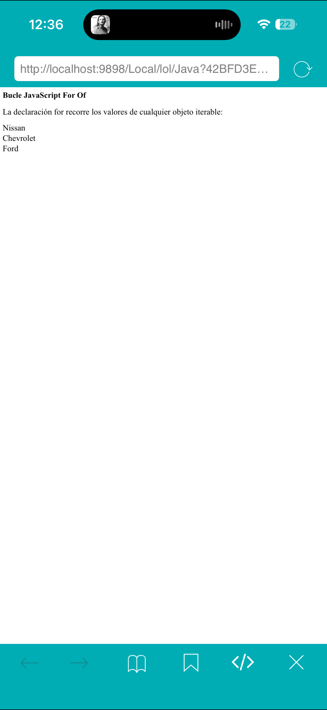
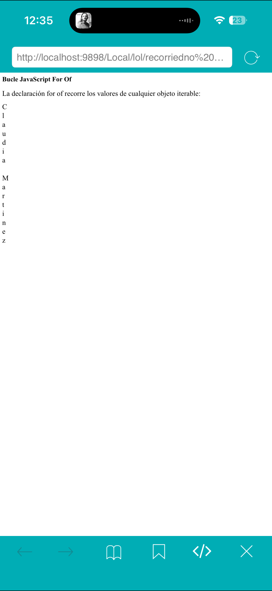

¿Qué hice?
En esta práctica utilicé un arreglo para almacenar varios nombres de automóviles y posteriormente recorrerlos para mostrarlos en la página web.
Comandos utilizados:
¿Qué hice?
En esta práctica utilicé un arreglo de números y recorrí cada elemento mediante un ciclo para mostrar todos los valores almacenados.
Comandos utilizados:

¿Qué hice?
En esta práctica utilicé la estructura for...of para recorrer cada carácter de una cadena de texto y mostrarlo individualmente.
Comandos utilizados: